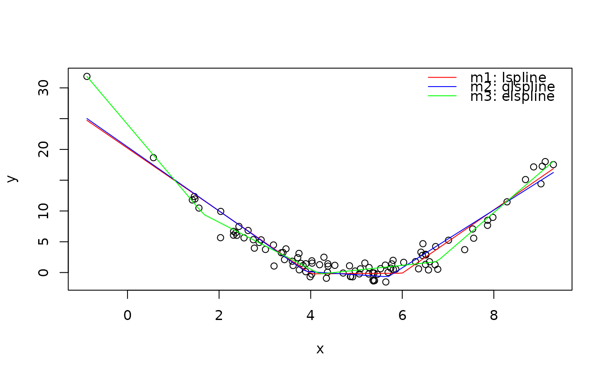

These functions compute the basis of piecewise-linear spline such that,
depending on the argument marginal, the coefficients can be
interpreted as (1) slopes of consecutive spline segments, or (2) slope change
at consecutive knots.
Usage
lspline(x, knots = NULL, marginal = FALSE, names = NULL)
qlspline(x, q, na.rm = FALSE, ...)
elspline(x, n, ...)Arguments
- x
numeric vector, the variable
- knots
numeric vector of knot positions
- marginal
logical, how to parametrize the spline, see Details
- names
character, vector of names for constructed variables
- q
numeric, a single scalar greater or equal to 2 for a number of equal-frequency intervals along
xor a vector of numbers in (0; 1) specifying the quantiles explicitely.- na.rm
logical, whether
NAshould be removed when calculating quantiles, passed tona.rmofquantile.- ...
other arguments passed to
lspline- n
integer greater than 2, knots are computed such that they cut
nequally-spaced intervals along the range ofx
Details
If marginal is FALSE (default) the coefficients of the spline
correspond to slopes of the consecutive segments. If it is TRUE the
first coefficient correspond to the slope of the first segment. The
consecutive coefficients correspond to the change in slope as compared to the
previous segment.
Function qlspline wraps lspline and calculates the knot
positions to be at quantiles of x. If q is a numerical scalar
greater or equal to 2, the quantiles are computed at seq(0, 1,
length.out = q + 1)[-c(1, q+1)], i.e. knots are at q-tiles of the
distribution of x. Alternatively, q can be a vector of values
in [0; 1] specifying the quantile probabilities directly (the vector is
passed to argument probs of quantile).
Function elspline wraps lspline and computes the knot positions
such that they cut the range of x into n equal-width intervals.
References
Poirier, Dale J., and Steven G. Garber. (1974) "The Determinants of Aerospace Profit Rates 1951-1971." Southern Economic Journal: 228-238.
Greene, William H. (2003) Econometric analysis. Pearson Education
Junger & Ponce de Leon (2011) "ares: Environment air pollution epidemiology: a library for timeseries analysis". R package version 0.7.2 retrieved from CRAN archives.
Author
This function is inspired by Stata command mkspline
and function ares::lspline from Junger & Ponce de
Leon (2011). As such, the implementation follows Greene
(2003), chapter 7.2.5
Examples
# Data from a quadratic polynomial
set.seed(666)
x <- rnorm(100, 5, 2)
y <- (x-5)^2 + rnorm(100)
plot(x, y)
# -- Marginal and non-marginal parametrisations
m.nonmarginal <- lm(y ~ lspline(x, 5))
m.marginal <- lm(y ~ lspline(x, 5, marginal=TRUE))
# Slope of consecutive segments
coef(m.nonmarginal)
#> (Intercept) lspline(x, 5)1 lspline(x, 5)2
#> 18.125666 -4.211405 4.318447
# Slope change and consecutive knots
coef(m.marginal)
#> (Intercept) lspline(x, 5, marginal = TRUE)1
#> 18.125666 -4.211405
#> lspline(x, 5, marginal = TRUE)2
#> 8.529853
# Identical predicted values
identical( fitted(m.nonmarginal), fitted(m.marginal))
#> [1] FALSE
# -- Different ways to place knots
# Manually: knots at x=4 and x=6
m1 <- lm(y ~ lspline(x, c(4, 6)))
# 2 knots at terciles of 'x'
m2 <- lm(y ~ qlspline(x, 3))
# 3 knots dividing range of 'x' into 4 equal-width intervals
m3 <- lm(y ~ elspline(x, 4))
# Graphically
ox <- seq(min(x), max(x), length=100)
lines(ox, predict(m1, data.frame(x=ox)), col="red")
lines(ox, predict(m2, data.frame(x=ox)), col="blue")
lines(ox, predict(m3, data.frame(x=ox)), col="green")
legend("topright",
legend=c("m1: lspline", "m2: qlspline", "m3: elspline"),
col=c("red", "blue", "green"),
bty="n", lty=1)
